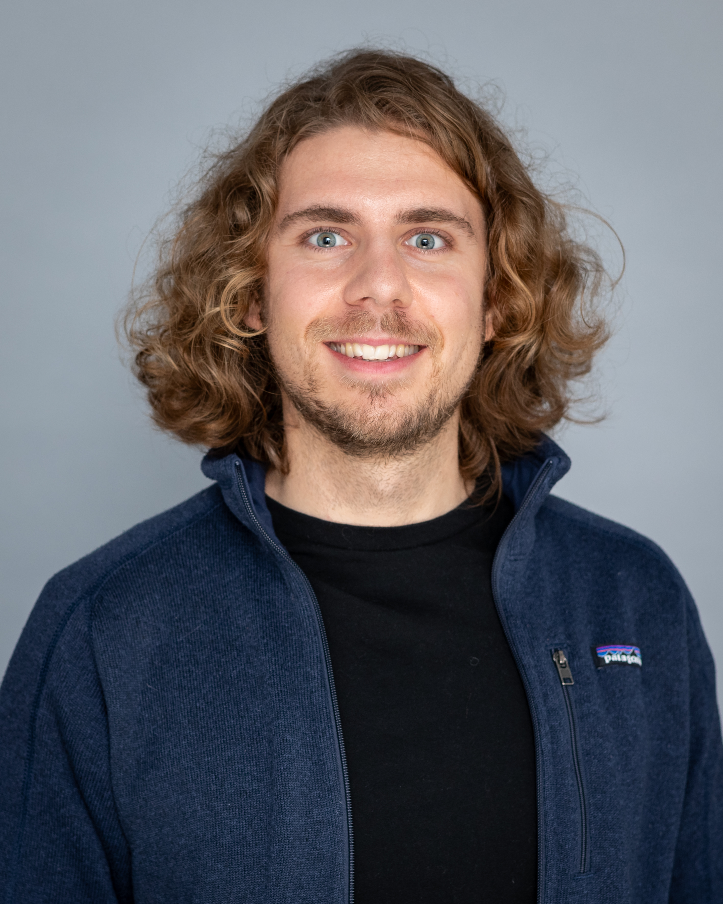
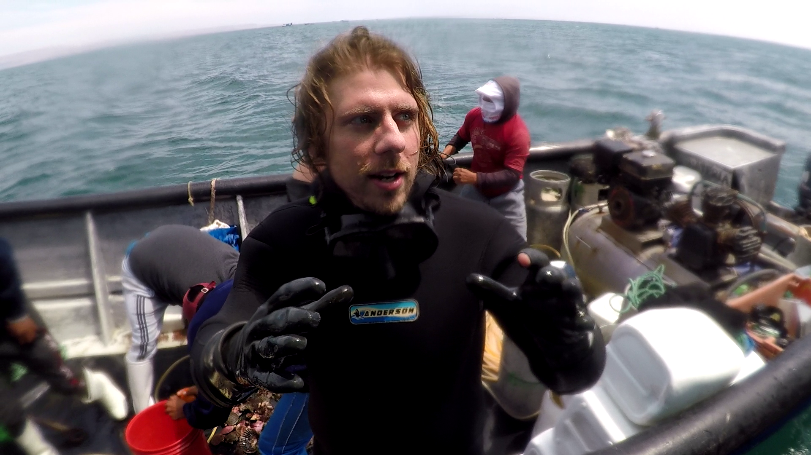
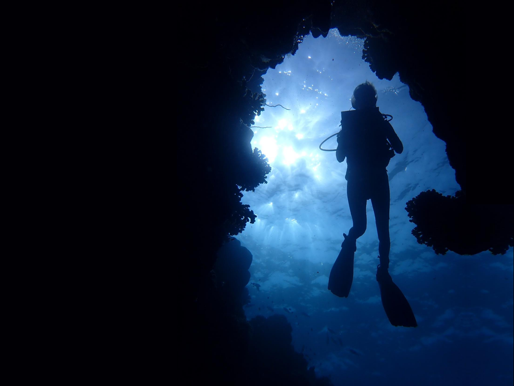
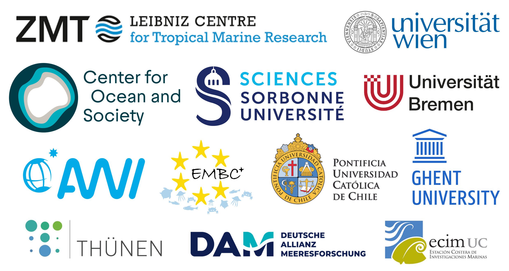

Marine social-ecologist & Environmental educator.
Connecting people and nature.
About

Hello, my name is Michael and I'm a marine social-ecologist fascinated by the interplay between ocean and society.
My research interest lies at the interface between natural resource management and the human dimension of fisheries: As part of the Leibniz Centre for Tropical Marine Research (ZMT), I explore the dynamics of small-scale fisheries management in Latin America using a social-ecological network modelling lens.
In addition to my research, I'm passionate about science communication, promoting ocean literacy and sparking curiosity in young minds.
Science
Humboldt-Tipping II (2023 - present)
Participatory modelling of social-ecological futures in coastal Peru
Humboldt-Tipping I (2020 - 2023)
Social-ecological network modelling of coastal benthic habitats and their users along the coast of Peru
Protection and Sustainable Use of the Oceans (2020 - 2021)
Effects of the exclusion of bottom trawling in marine protected areas (Natura 2000) of the German Baltic Sea
Sustainable Artisanal Fisheries under Risk (2018-2019)
Is the Minimum Legal Size Legislation working for the Chilean Abalone Concholepas concholepas?
Linking the Past to the Present (2015-2016)
Historical Ecology of the Northern Adriatic Sea
Scientific Expeditions
 Peru (2022)  Sudanese Red Sea | Deep South (2021) Baltic Sea | RV Solea & RV Clupea (2020) Sudanese Red Sea (2019) Chile (2018) Arctic Ocean | RV Polarstern (2017) French Guyana (2015) Turkey (2014) Jordan (2014) Costa Rica (2012)
Education

International M.Sc. in Marine Biodiversity and Conservation (EMBC+)
University of Bremen, Sorbonne University and University of Ghent (2016 - 2018)
B.Sc. in Ecology University of Vienna (2012 - 2016)
B.Sc. in Earth Sciences University of Vienna (2012 - 2015)
teaching
Beyond publications
My passion is taking science to where it has the greatest impact.
I am dedicated to introducing young minds to the fascinating world of marine ecology and systems thinking. My pratical experience ranges from working with kids from kindergarten to scholars at university level. I thrive in both classroom as well as outdoor settings: from national park to lecture hall, from land-based workshops to high school education on the open ocean.
Workshops
My teaching goal is to spark people's curiosity. For this, I try to create spaces in which students feel comfortable, can develop their skills through exploration and thrive collectively.
I am always curious to try out innovative teaching approaches that challenge me and my students alike. To get a taste of this, or simply learn how to use R to understand the ways in which places and connections shape our world, check out the links below.